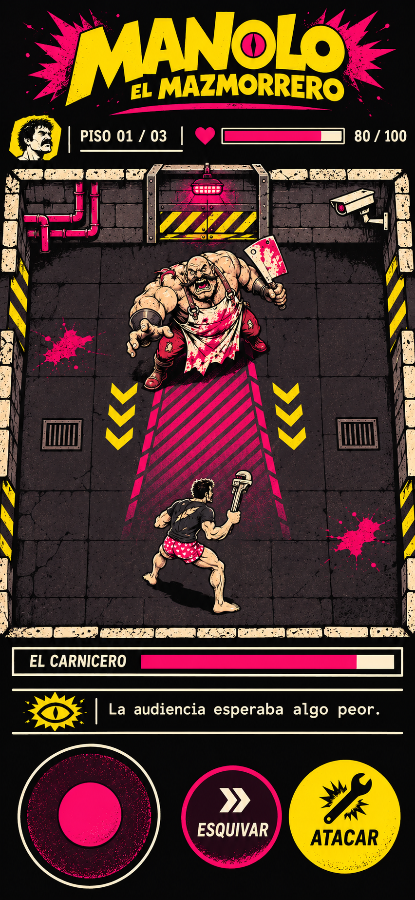
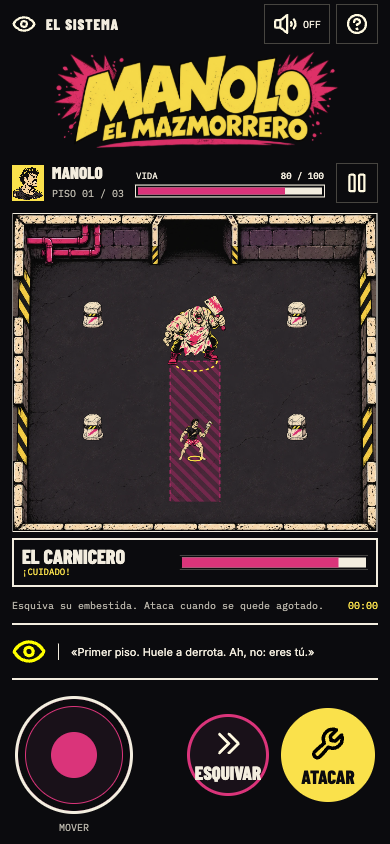

Selected target · editorial system + clear poses

Implementation · first boss, charge telegraph

Same 390 × 844 display scale and first-boss encounter. Reference is a concept, not the simulation layout: the working version retains its 480 × 420 arena, four collision pillars and original combat scale.

